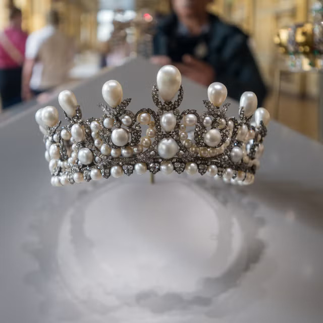
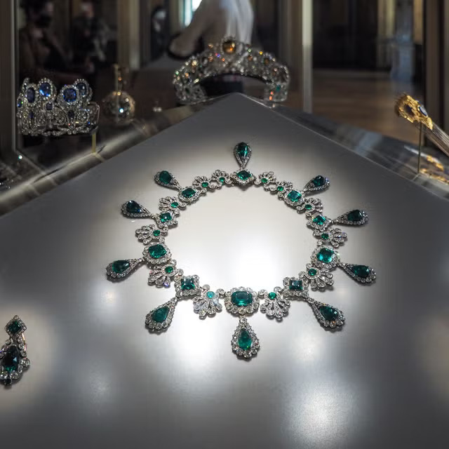
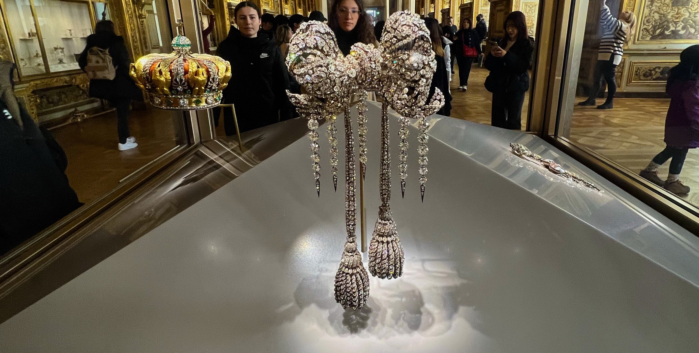
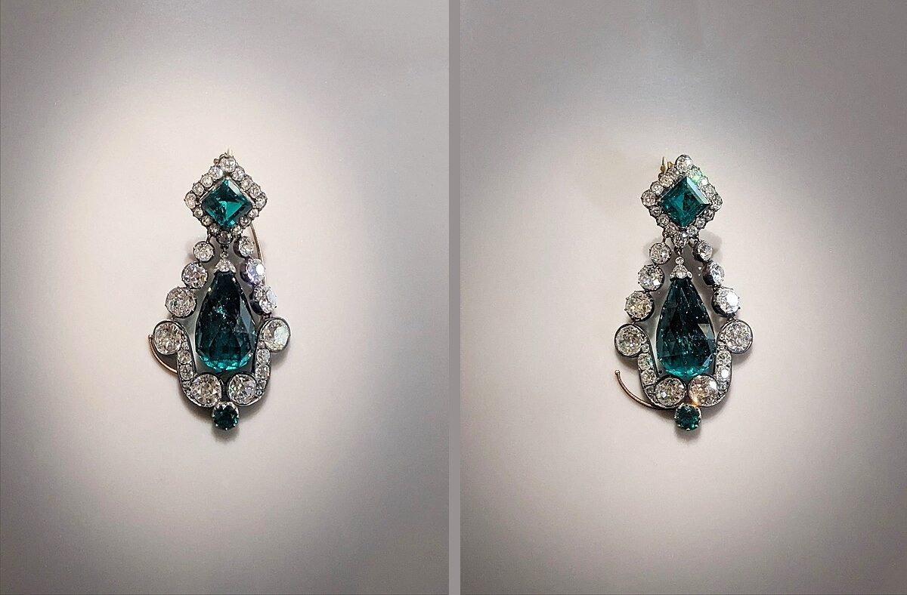
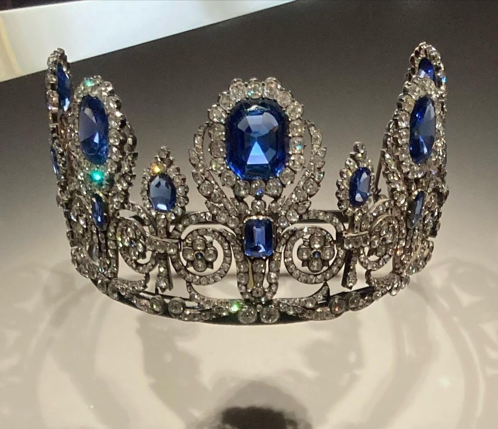
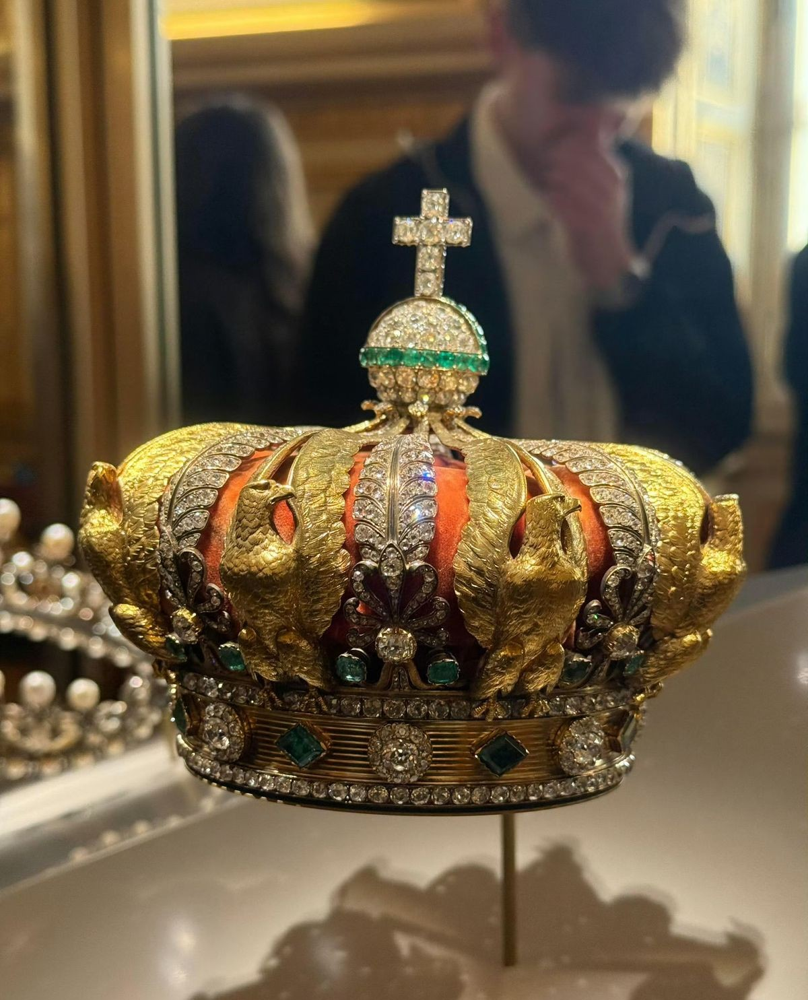
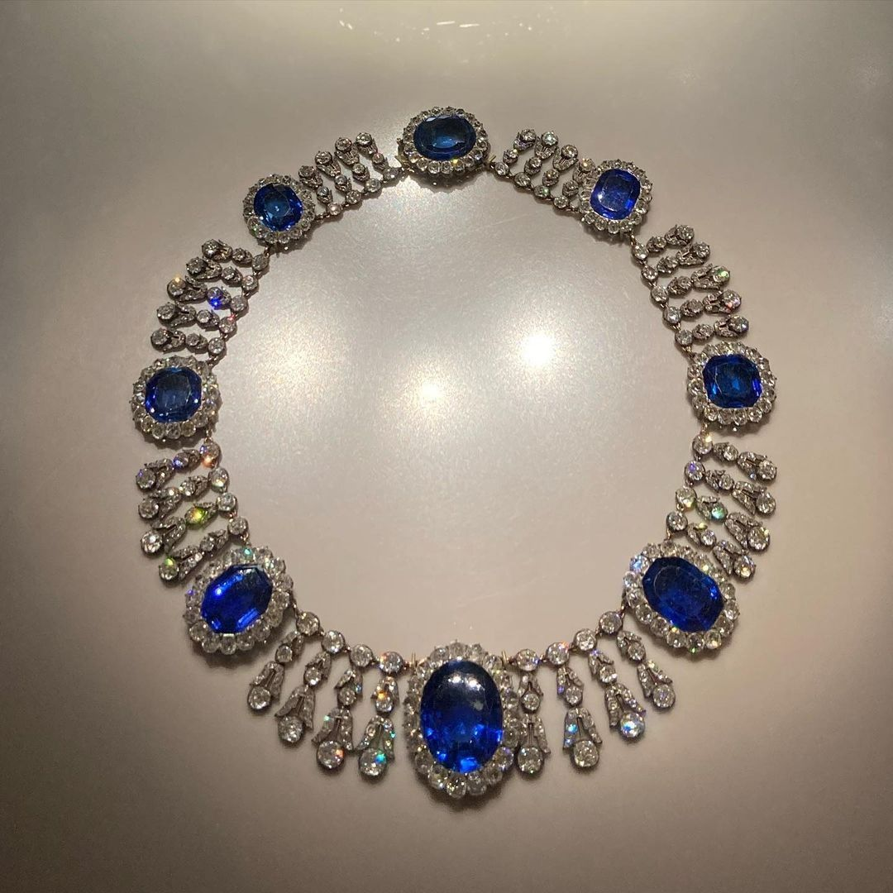
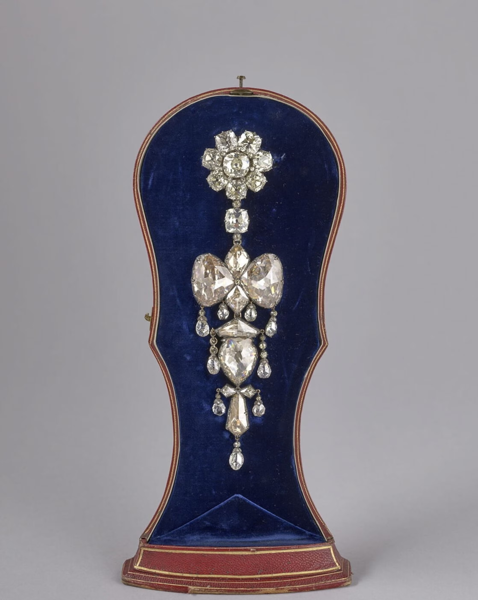
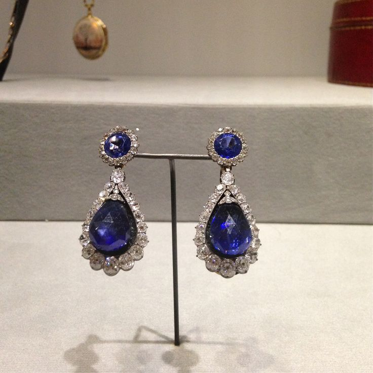

MISSINGTiara of Empress Eugénie
ALEXANDRE-GABRIEL LEMONNIER | 1853
IMPORTANCE
This tiara wasn’t just a piece of jewelry; it shaped how people saw the Second French Empire and Empress Eugénie herself. You can spot it in official portraits that set the tone for the whole era, showing off France’s flair for luxury and its lead in fine craftsmanship.
DESIGN
The tiara features diamonds arranged in soft arches, each one crowned with natural pearls that get bigger toward the center. The neoclassical style isn’t an accident. Eugénie loved reviving old trends, and the design shows off the kind of expert stone-setting you’d only find in mid-1800s Paris.

MISSINGEmerald Necklace of Empress Marie-Louise
UNKNOWN | 1810
IMPORTANCE
Napoleon I had this necklace created for Marie-Louise when they married—not just for romance, but for political reasons as well. Their union connected the French Empire with the influential Austrian Habsburgs. The necklace became more than a piece of jewelry; it was a declaration. It demonstrated Napoleon’s authority and his right to rule.
DESIGN
The necklace is composed of large, rectangular Colombian emeralds that are hard to overlook, each framed by glittering diamonds. The entire piece has a strong, symmetrical appearance—very much in the Empire style, which favored order and bold forms. It’s designed to make a statement.

MISSINGBodice Brooch of Empress Eugénie
UNKNOWN | 1855
IMPORTANCE
The brooch was Empress Eugénie's signature. She wore it to all the big state events, and eventually it became a symbol of the imperial court’s style. The piece captured the drama and elegance that defined fashion during the Second Empire.
DESIGN
Crafted entirely from diamonds, set in silver and gold, and looks just like a ribbon tied in a soft fold. It's sculptural shape shows the period’s skill in making rigid gemstones appear light and fabric-like.

MISSINGEmerald Earrings of Empress Marie Louise
UNKNOWN | 1810
IMPORTANCE
These earrings were part of Napoleon’s effort to present a strong, royal family. He used pieces like these to make Marie-Louise appear as the fresh face of the French Empire.
DESIGN
Each earring features a large emerald drop suspended from a cluster of diamonds. The simple design allows the emeralds to stand out—bold, vivid, and unmistakably elegant. This was precisely the look expected from early-1800s imperial style.

MISSINGSapphire Tiara of Queen Marie-Amélie & Queen Hortense
UKNOWN | 1900s
IMPORTANCE
This tiara has witnessed a lot. Two separate French queens wore it, each from a different time, so it’s more than just a piece of jewelry—it’s a surviving link through major political shifts. By looking at it, you can still catch a glimpse of the old Bourbon-Orléans monarchy.
DESIGN
The design is timeless. Deep blue sapphires take center stage, surrounded by diamonds. Those scrolling patterns and the flawless spacing typical of the early 19th-century French royalty.

RECOVEREDCrown of Empress Eugénie
ALEXANDRE-GABRIEL LEMONNIER AND J.-P.MAHEU | 1855
IMPORTANCE
This crown was made for the Exposition Universelle.The Second Empire wanted to showcase the height of French luxury, and nothing captured that better than this crown. For Eugénie, it stood as the ultimate emblem of her imperial status.
DESIGN
Over 2,400 diamonds were set into graceful arches and fleur-de-lis motifs, with large pear-shaped stones along the band. The entire crown seems to glow, highlighting the remarkable craftsmanship of Parisian jewelers in the 19th century.

MISSINGSapphire Necklace of Queen Marie-Amélie & Queen Hortense
UKNOWN | 1900s
IMPORTANCE
Worn by royalty over two reigns, it displayed the elegance of the monarchy and the revitalized Bourbon identity whenever it appeared in public.
DESIGN
The design blends oval and cushion-cut sapphires with clusters of diamonds, alternating between them. The blue and white shades weren’t chosen at random; they were beloved for what they represented—purity and royalty.

MISSINGReliquary Brooch of Empress Eugénie
ALFRED BAPST | 1900s
IMPORTANCE
This brooch is remarkable because it contains diamonds that once belonged to Louis XIV, creating a link between the Second Empire and France’s old Bourbon monarchy. In this way, it unites royal history with the empire’s current era.
DESIGN
The design is inspired by medieval French reliquaries—you can spot the Gothic lines, the delicate trefoil shapes, and a central area that almost looks like a secret compartment. It blends old-world aesthetics with modern diamond cutting, perfectly reflecting Eugénie’s romantic sensibilities.

MISSINGSingle Sapphire Earring of Queen Marie-Amélie & Queen Hortense
UKNOWN | 1900s
IMPORTANCE
This earring, the last remaining piece from its set, truly highlights the artistry and significance of royal jewelry. It’s more than just an accessory— it represented wealth, status, and a sense of completeness during ceremonies.
DESIGN
Like a sapphire drop or oval, bordered with diamonds. It matches perfectly with the necklace and tiara from the same collection, all sharing the same style and symmetry.